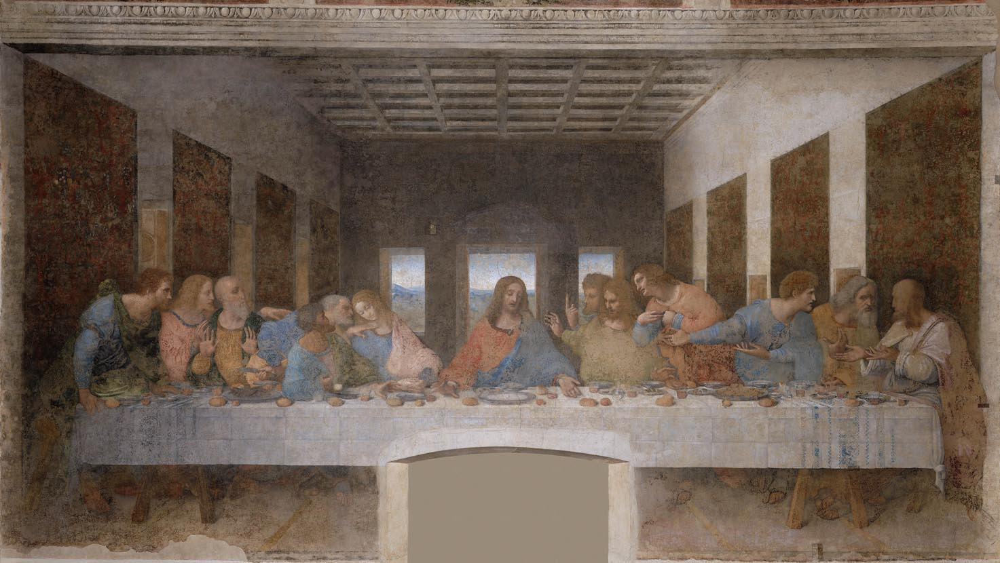

The Last Supper (Italian: L'Ultima Cena) is a mural by the Italian High Renaissance artist Leonardo da Vinci, dating from about 1495-1498. It is preserved in the refectory of the Church of Santa Maria delle Grazie in Milan, Italy.
It was painted by Leonardo da Vinci between 1495 and 1498 on the wall of the refectory in the convent and church of Santa Maria delle Grazie, commissioned by the governor of Milan, Ludovico Sforza. It is not a painting on canvas, but a huge mural measuring approximately 8.8 meters in length.
Da Vinci did not paint the moment of the meal, but rather chose the second moment when Christ said to his disciples: "One of you will betray me."
Before da Vinci, artists painted The Last Supper in a calm and orderly manner, but he made each character have an independent psychological personality.
The apostles were divided into four groups of three, with Christ alone in the center.
The first group (far left) expresses surprise and astonishment.
The second group includes:
Judas Iscariot.
Peter.
John.
This is the most tense group.
Judas holds a small purse, symbolizing the money he received for his betrayal in the Gospel narrative. He reaches for the food at the same moment Christ does, alluding to the Gospel passage.
Peter leans forward, holding a knife, a foreshadowing of his later use of the sword to arrest Christ.
John appears calm and composed, in contrast to the others' emotional outbursts.
The third group includes:
Thomas.
James the Greater.
Philip.
Thomas raises his finger upwards, a gesture many interpret as a hint of doubt, even though the event hadn't yet occurred.
The fourth group:
The last three disciples are discussing amongst themselves, as if trying to comprehend what they've just heard.
This gives the impression that the news spread like a wave across the table.